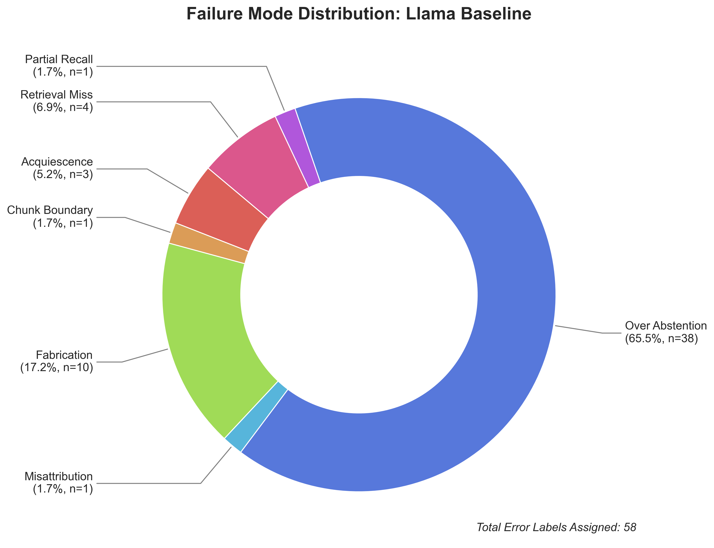
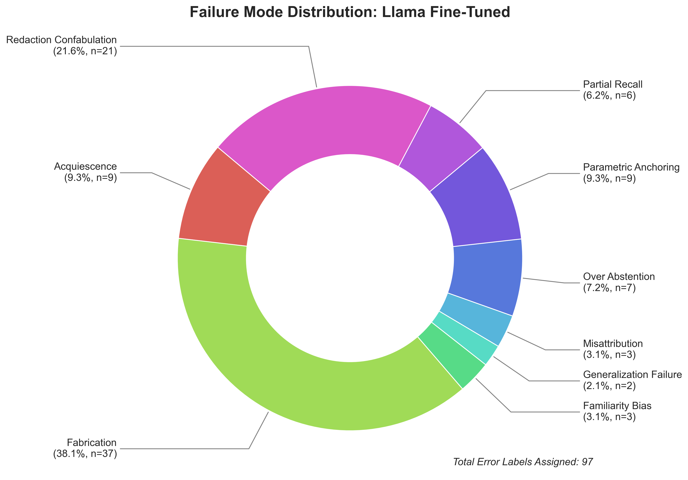
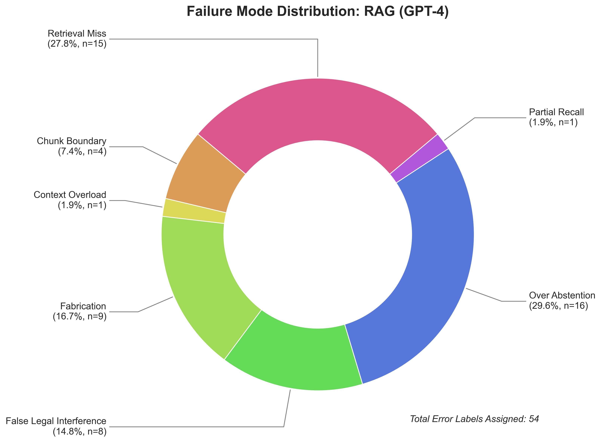
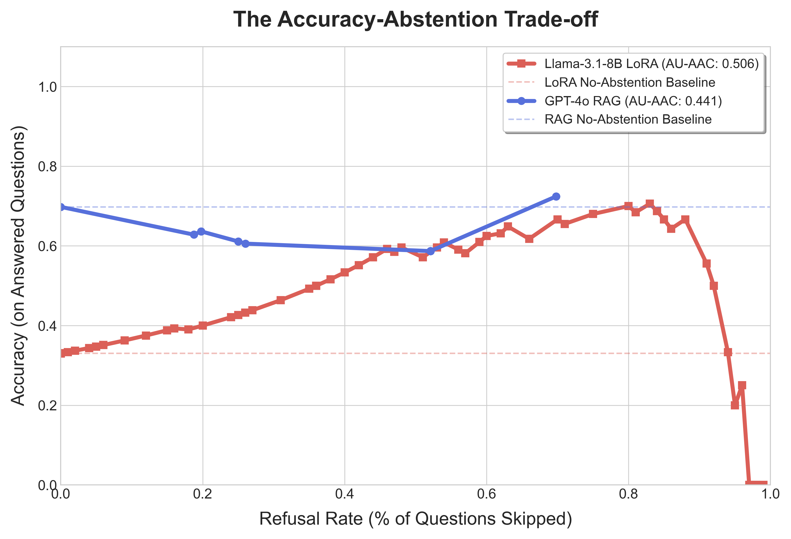
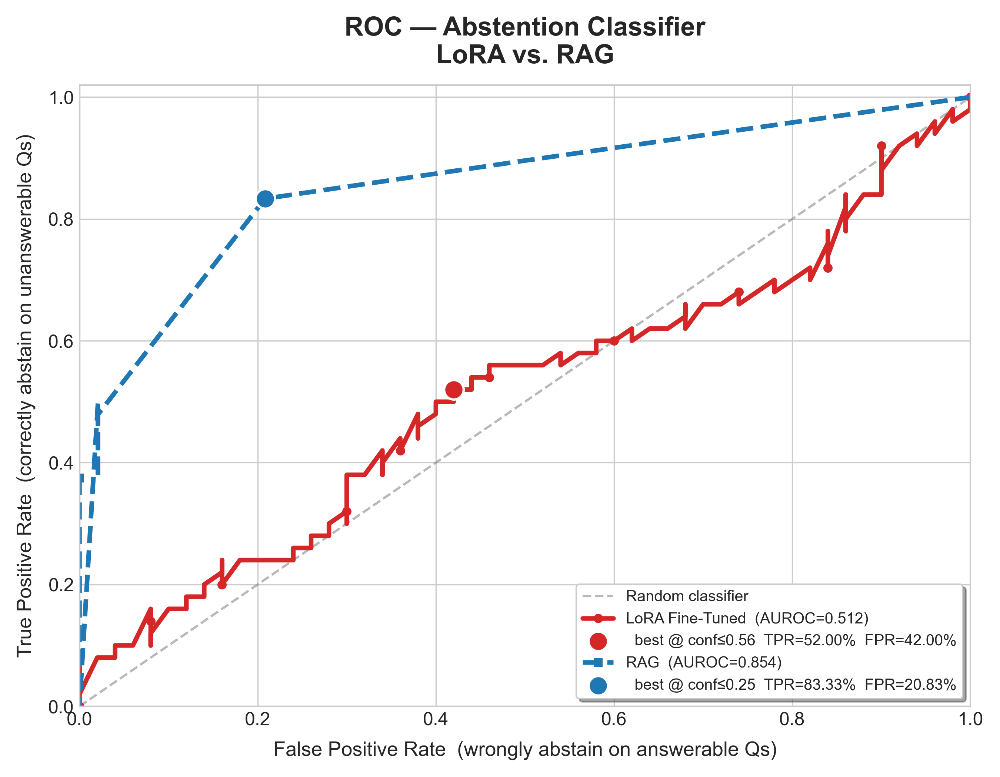
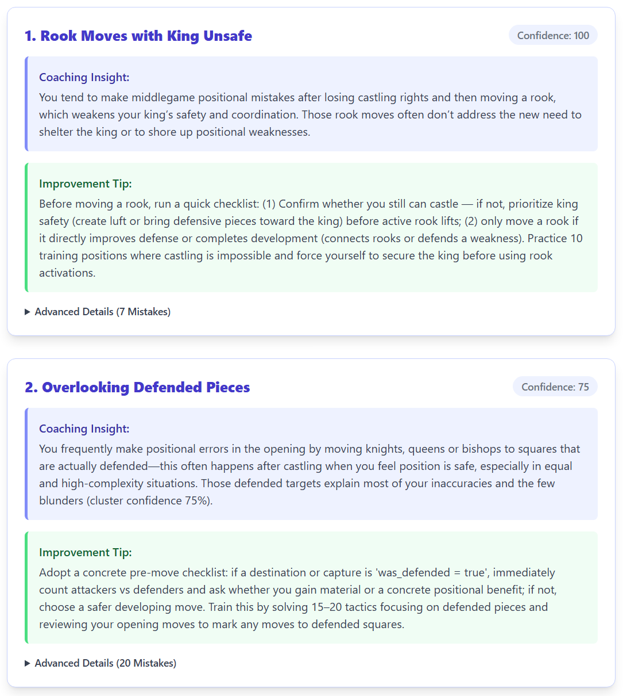
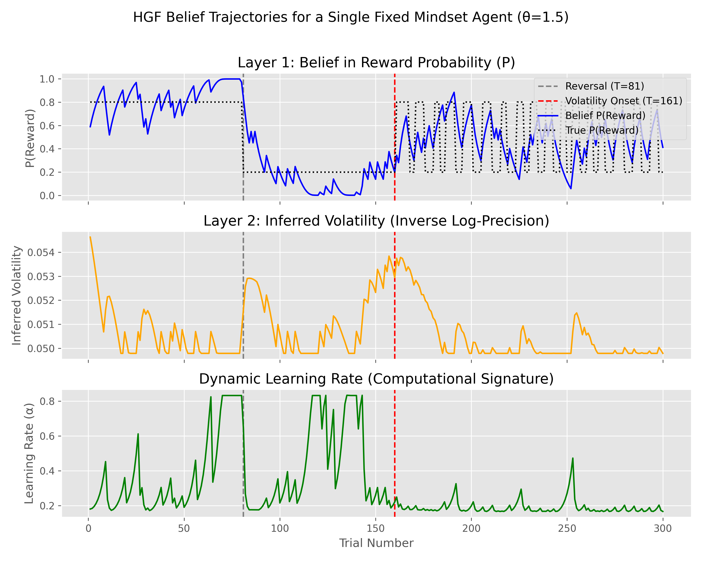
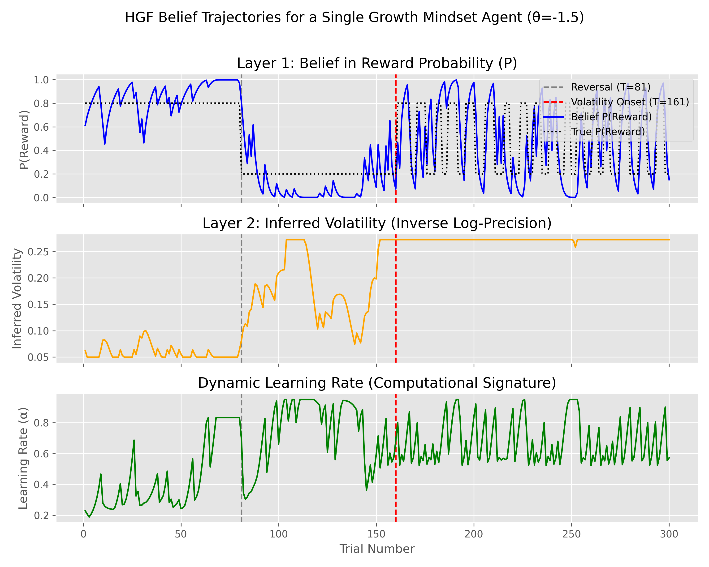
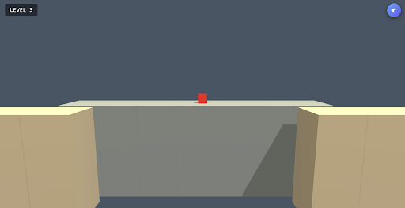
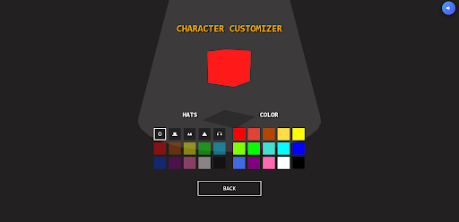

Portfolio
Timothy Sim
CS @ Princeton ’26 — building at the intersection of machine learning, systems, and healthcare. QuestBridge Scholar.
Projects
Investigated how domain-specific fine-tuning degrades epistemic calibration in LLMs. Built a 100-question legal benchmark across four stress-test tiers and characterized a “fine-tuning confidence trap” in which domain adaptation suppresses model humility. Found that LoRA perplexity is a fundamentally unreliable abstention signal (AUROC 0.512 vs. RAG’s 0.854).
Overview
A COS 484 (NLP) final project with co-authors Faith Best and Kaitlyn Wen. We evaluated whether a smaller open-weight model (Llama-3.1-8B-Instruct) fine-tuned with LoRA could outperform GPT-4o with RAG on legal question answering in terms of reliability — using the 2025 U.S. House Oversight Epstein Estate documents (2.1M rows, 25,000+ files) as the test corpus.
Key Findings
Approach
Figures

Llama Baseline — error distribution dominated by over-abstention

LoRA Fine-Tuned — fabrication becomes primary failure mode

GPT-4o RAG — highest accuracy but false legal interference present

Accuracy-Abstention Tradeoff Curves

Abstention Classifier via ROC
Dual-modality breakdance move classifier combining video (MediaPipe landmarks) with wearable IMU sensors (Sony mocopi). Uses a Transformer encoder for video and a BiLSTM + Transformer hybrid for IMU data, across 15 move classes. Supports real-time sliding-window inference with per-window confidence scoring.
Overview
An independent work report (Spring 2026) advised by Kyle Jamieson. Break Point classifies breakdancing moves in a set using two complementary modalities: computer vision via MediaPipe landmark extraction, and Sony mocopi IMU sensors (12-sensor Pro Kit, 60 Hz). The original goal was to compare novice and seasoned breakers, but the project pivoted to move classification following IRB delays. Fifteen move classes were defined across three categories: Toprock (Open Step, Cross Step, Kick Step, Kickcross Step, Shuffle), Floorwork (CC, Hook, Sweep, 6-Step, 3-Step, Short Drop, Long Drop), and Freezes (Standing Arms Open, Standing Arms Closed, Baby Freeze, Turtle Freeze).
Key Results
Approach
Figures
Full-stack platform that analyzes player habits and weaknesses across hundreds of chess matches. Uses HDBSCAN clustering and LASSO regression to extract mistake patterns from feature vectors of historical game data, then delivers personalized AI-generated feedback.
Overview
An independent work report (Fall 2025) advised by Robert Fish. Skill Issue is a web app that goes beyond Chess.com's "Insights" feature by identifying game-state-specific bad habits — not just raw mistake percentages. Users sign in with Google, link their Chess.com account, and the pipeline automatically pulls PGN game files, runs Stockfish centipawn loss analysis, encodes board positions as feature vectors, clusters them with HDBSCAN, finds contextual correlations via LASSO regression, and generates personalized LLM feedback. Targets the $3.34B global chess market and 1.5M+ Chess.com premium subscribers.
Pipeline

Example Skill Issue feedback for a linked Chess.com account

Prototype Abbreviated Logo for Skill Issue
Modeled fixed vs. growth mindset as a static parameter in a three-level Hierarchical Gaussian Filter (HGF) to study how each mindset adapts to volatile environments. Growth mindset agents showed up to 266% higher dynamic learning rates in highly volatile conditions, with significantly better accuracy.
Overview
A PSY 360 (Computational Cognitive Science) final project advised by Professor Brenden Lake. The project asks whether Carol Dweck's fixed and growth mindset theory can be formalized as a computational model of cognition. Using a three-level Hierarchical Gaussian Filter — a Bayesian framework for modeling belief updates under uncertainty — mindset is encoded as a static volatility parameter (θ₃) that governs how an agent weighs new information against its prior beliefs. Agents then complete a 300-trial reward task with three distinct phases: a stable phase, a reversed stable phase, and a volatile phase in which the reward probability flips every 3–6 trials.
Key Results
Approach
Figures

Fixed mindset — belief and learning rate across 300 trials

Growth mindset — higher DLR in volatile phase (trials 161-300)
Fully playable 2.5D platformer built from scratch with Three.js. Features a Z-axis layer-switching mechanic that lets both the player and enemy AI transition between foreground and background environments, with dynamic shadow tracking and custom GLSL shader implementations.
play on github pagesOverview
A COS 426 (Computer Graphics) final project. Déjà Vu is a fully playable 2.5D platformer built entirely from scratch using Three.js and GLSL shaders — no game engine. The core innovation is a Z-axis layer-switching mechanic where both the player character and enemy AI can transition between a foreground and background plane, creating depth-based puzzle and combat gameplay.
Technical Details
Screenshots

The 2.5D world — foreground and background planes visible simultaneously

Character Customization Screen
Experience
Skills